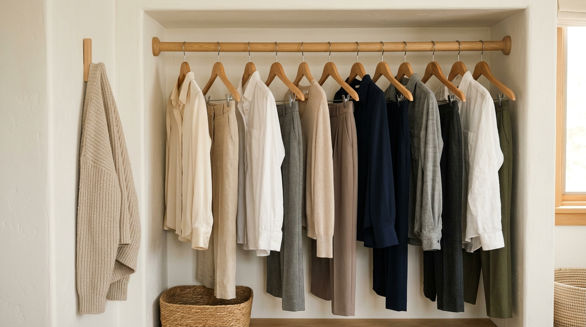

You spend Sunday afternoon meticulously organizing your closet. You hang every shirt by color, fold every pair of trousers with razor-sharp edges, and stand back admiring the showroom look. But by Thursday morning, the exact same story unfolds:
- Your favorite everyday work blouses have vanished into a sea of tightly jammed hangers
- Finding matching pants for your morning meeting requires pushing five heavy winter coats aside
- Cardigans and jeans you wore once for three hours end up draped over a bedroom chair
- Putting a clean laundry basket away feels so exhausting that clean clothes remain folded on the dresser for four days
When a wardrobe quickly relapses into clutter, we almost always blame the square footage. We assume our apartment closet is simply too small, that we need extra modular shelves, or that we must purge half our wardrobe.
In most small apartments, the problem isn't closet size. The problem is how clothing is grouped and accessed.
The goal of closet organization is not to create a museum exhibition that only looks good when untouched. The goal is to build a low-friction system that works on an ordinary, rushed Tuesday morning. Here are the 5 closet grouping rules that make small wardrobes effortless to scan, retrieve, and maintain.
Why Grouping Matters in a Small Closet
In a spacious walk-in dressing room, you can afford poor categorization because there is plenty of room to roam. But in a compact reach-in apartment closet, physical space is tight. Every extra inch of searching translates directly into friction.
When you group clothing intentionally, you create a direct chain of maintainability:
GROUPING → VISIBILITY → RETRIEVAL → RESET → MAINTENANCE
Clear grouping eliminates mental hesitation. When your eyes know exactly where a category starts and stops, picking an outfit takes thirty seconds and putting it back takes two.
A functional closet system makes the next physical action obvious. To understand how spacing and visual gaps prevent clothes from bunching together, see our guide on the empty hanger rule for closet organization.
1. Keep Similar Clothes Together
The foundation of maintainable closet organization is obvious visual boundaries between core clothing types.
When button-downs, casual tees, heavy knit cardigans, and formal dresses are hung randomly by color across a rail, your brain has to process shape, sleeve length, and fabric weight simultaneously. By grouping like items together, you dramatically reduce visual fatigue:
- Core Tops: Short-sleeve tops, long-sleeve shirts, and work blouses grouped in one contiguous block.
- Core Bottoms: Tailored trousers, casual denim, and skirts grouped together with dedicated pant hangers.
- Full-Length Pieces: Dresses and jumpsuits assigned to the end of the rail where they won't crumple against shoe racks or low drawers.
- Layering Pieces: Blazers, cardigan sweaters, and lightweight jackets kept in their own defined section.
The Practical Principle:
GROUP → SEE → CHOOSE. You do not need twenty micro-categories. Create 4–5 broad, unmistakable sections that reflect your wardrobe and lifestyle.
For high-impact visual rules that elevate rental closets, explore our tutorial on 5 closet rules that make any closet look expensive.
2. Keep Outfit Pairs Close
Most people wear 20% of their wardrobe 80% of the time, repeatedly combining the same favorite pieces. Yet in many traditional setups, work blouses are hung at the far left edge and matching work trousers are placed three feet away at the opposite end.

When frequently paired garments live side-by-side, your morning routine becomes streamlined:
- Hang everyday professional blouses right next to your tailored trousers.
- Keep your go-to weekend layering tees directly beside casual denim.
- Store active workout tops directly above workout leggings in your drawer system.
This does not mean pre-assembling rigid outfits on single hangers. It simply means placing complementary categories within the same visual field so you don't have to shuffle through thirty hangers to assemble a basic outfit.
3. Separate Everyday From Occasional
One of the most common small closet mistakes is letting once-a-year items occupy prime real estate.
The center 30 to 40 inches of your clothes rail—directly at eye level and easiest arm reach—is your closet's most valuable asset. It should be reserved exclusively for the clothes you wear on a weekly basis:
| Wardrobe Zone | Where It Belongs in a Small Closet | What Goes There |
|---|---|---|
| EVERYDAY | Center rail & top dresser drawers (Prime Reach) | Current season workwear, daily basics, favorite denim |
| WEEKLY / SECONDARY | Sides of rail & middle shelves | Light jackets, weekend dresses, athletic gear |
| OCCASIONAL | Far corners, high upper shelves, garment bags | Formal evening wear, wedding guest suits, off-season coats |
When you shift heavy formalwear and bridesmaid dresses to the closet edges, the clothes you actually touch every morning instantly gain room to breathe. For auditing what truly belongs in daily rotation, read our guide on how to audit your closet based on what you actually wear.
4. Give "In-Between" Clothes a Home
Almost every bedroom contains "The Chair"—a physical armchair, bench, or dresser corner piled high with clothing that has been worn once for a few hours. It isn't dirty enough for the laundry hamper, but you hesitate to hang it back beside freshly laundered shirts.
Without an intentional system, this pile grows until getting dressed feels chaotic. The solution is creating a dedicated Rewear Zone:
- An Interior Wall Hook: Mount a simple adhesive or wooden peg hook inside your closet door or side wall for jeans and cardigans in active rotation.
- A Dedicated Hanging Ledge: Reserve the first two hangers on the far edge of the rod specifically for re-wear items.
- A Ventilated Basket: Place a small canvas or open wire basket on a lower shelf to catch lounge pants and sweaters between wears.
Core Rule:
RE-WEAR → DESIGNATED SPOT. When clothing in active rotation has an assigned, bounded home, bedroom surfaces remain 100% clutter-free.
For a complete breakdown of managing worn-once pieces, check out where to put clothes you've worn once: the rewear zone system.
5. Make Categories Easy to Reset
The ultimate test of an organization system is not how beautiful it looks on day one—it is how effortlessly it resets after a busy week.
If returning a laundered shirt requires shifting ten hangers, sliding boxes, and executing precise retail folds, the system will inevitably collapse. A maintainable closet adheres to the One-Motion Rule:
- Single-Motion Hanging: Don't cram hangers so tightly that you need two hands to wedge an item in. Leave 1 to 1.5 inches of open air between categories.
- Open Bins Over Lidded Boxes: Use open-top canvas or felt bins for accessories, socks, and workout gear so items can simply be dropped in rather than unlatched.
- Clear Shelf Boundaries: Use vertical acrylic or wooden dividers to prevent folded sweater stacks from leaning into adjacent piles.
To avoid structural habits that crowd compact spaces, explore our guide on 5 closet mistakes making your closet feel smaller.
The Small Closet Grouping Test
Before buying any new organizers, run your current wardrobe through this 5-question diagnostic filter:
The Maintainability Diagnostic:
1. Can I find what I need in under 30 seconds?
If no → Your categories are too broad or scattered across multiple areas.
2. Can I put a clean item back with one hand?
If no → The hanging rod is overpacked or the bin system requires too many physical steps.
3. Does the layout match how I actually get dressed?
If no → Shift pairing items (e.g. work shirts and work trousers) into adjacent zones.
4. Are my 5 most-worn outfits in prime eye-level reach?
If no → Relocate rarely worn formalwear and winter coats to the perimeter.
5. Does the closet still look orderly after 7 busy days?
If no → Simplify your categories. The best system is the simplest one you can maintain effortlessly.
A 15-Minute Closet Grouping Reset
You don't need a weekend-long overhaul to transform your closet. Follow this rapid 6-step reset today without buying a single container:
- Pull Obvious Categories Together (3 mins): Slide all shirts to one side, all pants to the center, and all jackets to the right.
- Isolate Your Everyday Rotation (3 mins): Identify the 10–15 items you wore this past week.
- Shift Daily Pieces to Prime Center Space (3 mins): Place your active rotation right in the center of the rail where your hands naturally reach first.
- Push Occasional Wear to the Corners (2 mins): Slide suits, formal dresses, and bulky winter gear to the far edges.
- Designate Your Rewear Spot (2 mins): Clear two hangers or set up an adhesive wall hook exclusively for in-between items.
- Test the Return Motion (2 mins): Take one shirt off the hanger and put it back. Ensure it glides smoothly without catching on neighboring garments.
Small Closet Grouping Checklist
Save this quick maintainability checklist for your next wardrobe refresh:
The Clutter-Free Closet Grouping Filter:
- □ Similar clothes stay together: Distinct blocks for tops, bottoms, and outerwear.
- □ Frequently paired pieces live close: Work separates and daily basics in nearby visual zones.
- □ Everyday clothes get prime space: Center rail reserved for weekly staples.
- □ In-between clothes have a dedicated home: Assigned rewear hook or basket.
- □ Categories reset in one motion: No two-handed wrestling to hang a shirt.
- □ Visual breathing room preserved: Clear spacing between major clothing groups.
- □ Zero complicated organizers required: The system functions on spatial grouping alone.
When You Actually Need More Storage
Only after you have grouped your wardrobe and tested the layout should you evaluate physical capacity.
Ask yourself: Is this an organization problem, or a capacity problem?
- An Organization Problem: Clothes are mixed together, seasonal items crowd the center rail, and daily basics are hard to reach. (Solved by grouping rules).
- A Capacity Problem: Even after grouping similar items and removing seasonal coats, clothes are physically pressed against each other so tightly that fabrics wrinkle.
If you have a true capacity bottleneck, consider renter-friendly tools such as a secondary hanging rod expander or slim non-slip velvet hangers. For non-permanent installation ideas, read our guide on how to organize a rental closet without drilling.
Frequently Asked Questions
Always organize by category first (e.g. all long-sleeve shirts together, all pants together). Once items are grouped by type, you can arrange them by color from light to dark within that category for a cohesive aesthetic. Organizing purely by color without categories leads to shirts and trousers getting mixed together.
Split the closet down the middle into two distinct halves rather than intertwining categories. Each person should have their own dedicated everyday zone, seasonal corner, and re-wear hook to keep boundaries completely clear.
Group folded sweaters and knits by fabric weight (heavy wool together, lightweight cottons together) and limit stacks to 3–4 items high. Use shelf dividers to prevent stacks from toppling over sideways.